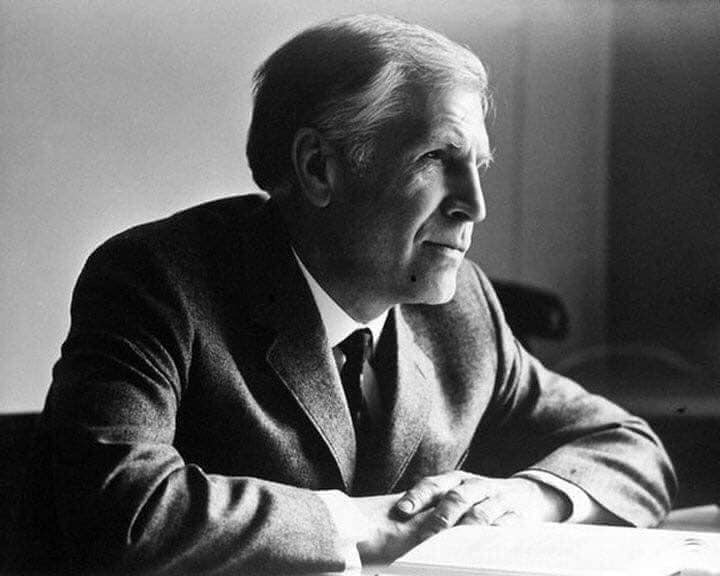

Table of Contents
The adjoint method is, at its core, the same idea as backpropagation or reverse-mode automatic differentiation. In practice, though, it’s often helpful to understand how it works under the hood. Basic implementations of backprop can be sub-optimal or impractical, especially in settings like PDE-constrained optimization or stochastic optimal control.
Linear Systems
For a parameter \(\theta \in \mathbb{R}^{d_\theta}\), consider \(x = x(\theta)\) the solution of the linear system
\[ A x = b, \]
where the matrix \(A = A(\theta) \in \mathbb{R}^{d_x \times d_x}\) and the vector \(b = b(\theta) \in \mathbb{R}^{d_x}\) depend on \(\theta\). This setup is typical when discretizing PDEs: \(A\) arises from the differential operator, and \(b\) from the source term. We are interested in a loss function of the type
\[ \mathcal{L} = F(\theta, x), \]
with \(F: \mathbb{R}^{d_\theta} \times \mathbb{R}^{d_x} \to \mathbb{R}\). We aim to compute the derivative of \(\mathcal{L}\) with respect to \(\theta\). Applying the chain rule,
\[ D_\theta \mathcal{L}= F_\theta - F_x A^{-1} \left( A_\theta \, x - b_\theta \right) \; \in \mathbb{R}^{1, d_\theta}, \]
The notation \(F_\theta = \nabla_\theta F^\top \in \mathbb{R}^{1, d_\theta}\) denotes the Jacobian of \(F\) with respect to \(\theta\), and similarly for \(F_x\) and \(A_\theta\) and \(b_\theta\). Throughout the notes, we will mainly be computing Jacobian matrices; for scalar functions, the jacobian is the transpose of the gradient. When \(d_x \gg 1\) and \(d_\theta \gg 1\), directly computing \(A^{-1}\) is infeasible. Naively evaluating \(A^{-1} (A_\theta x - b_\theta)\) would require \(d_\theta\) linear solves, which is too expensive. A better approach is to first compute \(\lambda^\top = F_x A^{-1}\) by solving the adjoint system
\[ A^\top \lambda = F_x^\top. \]
This requires only one linear solve. Once \(\lambda\) is computed, the jacobian simplifies to
\[ D_\theta \mathcal{L}= F_\theta - \lambda^\top (A_\theta x - b_\theta). \]
Adjoint Method
Now consider a more general situation where \(x \in \mathbb{R}^{d_x}\) and \(\theta \in \mathbb{R}^{d_\theta}\) are related by an implicit equation
\[ \Phi(x, \theta) = 0 \]
for some function \(\Phi: \mathbb{R}^{d_x} \times \mathbb{R}^{d_\theta} \to \mathbb{R}^{d_x}\) that satisfies the usual conditions of the implicit function theorem. Differentiating gives \(x_\theta = -\Phi_x^{-1} \Phi_\theta\). As before, we want the sensitivity with respect to \(\theta\) of \(\mathcal{L} = F(x, \theta)\). It equals \(D_\theta \mathcal{L}= F_\theta - F_x \Phi_x^{-1} \Phi_\theta\) and can also be expressed as \(D_\theta \mathcal{L}= F_\theta - \lambda^\top \Phi_\theta\) where \(\lambda \in \mathbb{R}^{d_x}\) is the solution of the adjoint system
\[ \Phi_x^\top \lambda = F_x^\top. \tag{1}\]
Another way to present this computation is to note that, for any vector \(\lambda \in \mathbb{R}^{d_x}\), we have
\[ \mathcal{L} = F(\theta, x) - \lambda^\top \Phi(x, \theta) \]
since \(\Phi(x, \theta) = 0\) for all choices of \(\theta\). Introducing the “adjoint” variable \(\lambda\) allows one to eliminate cumbersome terms when computing \(D_\theta \mathcal{L}\). Differentiate with respect to \(\theta\) gives
\[ D_\theta \mathcal{L}= F_\theta - \lambda^\top \Phi_\theta + {\left( F_x - \lambda^\top \Phi_x \right)} x_\theta. \]
The term \(x_\theta \in \mathbb{R}^{d_x, d_\theta}\) is cumbersome, and we would like to eliminate it. To do this, it suffices to choose \(\lambda\) so that the term \(F_x - \lambda^\top \Phi_x\) vanishes, which is again the adjoint system Equation 1.
PDE Inverse Problems
Let us see how this works in the context of PDE-constrained optimization. Let \(\Omega \subset \mathbb{R}^d\) be a domain and let \(\kappa: \Omega \to \mathbb{R}\) be a scalar field. Consider the PDE
\[ \nabla {\left( e^{\kappa(x)} \nabla u \right)} = f, \tag{2}\]
where \(f\) is a given source term. The field \(\kappa\) describes the diffusion, or permeability, properties of the medium. We are interested in the solution \(u\) of the PDE on a bounded domain \(\Omega \subset \mathbb{R}^d\) with Dirichlet boundary conditions \(u(x) = 0\) for \(x \in \partial \Omega\). For each field \(\kappa\), the elliptic PDE determines a unique solution \(u\). We are interested in minimizing the quantity
\[ \mathcal{L}(\kappa) = \int_\Omega F(u(x)) \, dx, \]
for some given function \(F: \mathbb{R} \to \mathbb{R}\). A common case is
\[ \mathcal{L}(\kappa) = \frac{1}{2} \, \int_\Omega \left| u(x) - u^\star(x) \right|^2 \, w(x) \, dx, \]
where \(u^\star\) is a target solution and \(w(x)>0\) is a weight. The goal is to adjust the field \(\kappa\) so that \(u\) matches \(u^\star\) as closely as possible. To carry out the minimization of \(\mathcal{L}\) with respect to \(\kappa\), one needs the derivative of \(\mathcal{L}\) with respect to \(\kappa\). To that end, define the augmented functional
\[ \mathcal{L} = \int_\Omega F(u(x)) \, dx - \int_\Omega \lambda \left( \nabla \cdot (e^{\kappa} \nabla u) - f \right) \, dx, \]
for an auxiliary field \(\lambda : \Omega \to \mathbb{R}\) that will be chosen later. As before, a good choice of \(\lambda\) can simplify the computations. Let \(\delta \kappa\) be a perturbation of \(\kappa\). This induces a perturbation \(u + \delta u\) in the solution and the first order variation of \(\mathcal{L}\) reads:
\[ \delta \mathcal{L} = \int_\Omega F'(u) \, \delta u \, dx - \int_\Omega \lambda \, \nabla \cdot (e^{\kappa} \nabla \delta u) \, dx - \int_\Omega \lambda \, \nabla \cdot (e^{\kappa} \delta \kappa \nabla u) \, dx. \]
The term involving \(\delta u\) is inconvenient. Assuming \(\lambda\) also satisfies Dirichlet boundary conditions, which we can indeed assume seems we are free to define \(\lambda\) in any manner we want, we integrate by parts:
\[ \delta \mathcal{L} = \int_\Omega \left( F'(u) - \nabla \cdot (e^{\kappa} \nabla \lambda) \right) \delta u \, dx - \int_\Omega \lambda \, \nabla \cdot (e^{\kappa} \delta \kappa \nabla u) \, dx. \]
To eliminate the \(\delta u\) term, choose \(\lambda\) to satisfy the adjoint equation
\[ \nabla \cdot (e^{\kappa} \nabla \lambda) = F'(u), \tag{3}\]
with Dirichlet boundary conditions. Then, an integration by parts gives
\[ \begin{align*} \delta \mathcal{L} &= -\int_\Omega \lambda \, \nabla \cdot (e^{\kappa} \delta \kappa \nabla u) \, dx\\ &= \int_\Omega e^{\kappa} \, \left< \nabla u, \nabla \lambda \right> \, \delta \kappa \, dx = \left< g, \delta \kappa \right>_{L^2(\Omega)}. \end{align*} \]
This means that the \(L^2\) gradient of \(\mathcal{L}\) with respect to \(\kappa\) is given by:
\[ g = e^{\kappa} \, \left< \nabla u, \nabla \lambda \right>, \]
where \(\lambda: \Omega \to \mathbb{R}\) solves the adjoint system Equation 3. This shows that the gradient of the objective can be computed at the same computational cost as the solution the original PDE Equation 2. This expression can be used directly in gradient-based optimization schemes.
Controlled Diffusions
Consider the ODE on \([0, T]\):
\[ \dot{x} = b(t, \theta, x), \tag{4}\]
with initial condition \(x(0) = \mu(\theta)\), where \(x \in \mathbb{R}^{d_x}\) and \(\theta \in \mathbb{R}^{d_\theta}\). The drift term \(b\) is parameterized by \(\theta\). We want the sensitivity of the functional
\[ \mathcal{L} = \int_0^T f(t, \theta, x(t)) \, dt + g(\theta, x(T)), \]
where \(f\) and \(g\) are given functions. As before, introduce an auxiliary function \(\lambda(t) \in \mathbb{R}^{d_x}\) and write:
\[ \mathcal{L} = \mathcal{L} - \int_0^T \lambda^\top (\dot{x} - b(t, \theta, x)) \, dt. \]
Differentiating with respect to \(\theta\) gives:
\[ \begin{aligned} D_\theta \mathcal{L} &= \int_0^T \left( f_\theta + \lambda^\top b_\theta \right) dt + g_\theta(\theta, x(T)) + \lambda^\top(0) \mu_\theta \\ &\quad + \left( g_x - \lambda^\top(T) \right) x_\theta(T) + \int_0^T \left( f_x + \dot{\lambda}^\top + \lambda^\top b_x \right) x_\theta(t) \, dt. \end{aligned} \]
To eliminate the dependence on \(x_\theta(t)\), choose \(\lambda\) to satisfy the adjoint system:
\[ \begin{cases} \dot{\lambda}(t) = -\nabla_x f - b_x^\top \lambda(t), \\ \lambda(T) = \nabla_x g. \end{cases} \tag{5}\]
This is a linear ODE with a given terminal condition that needs to be solved backward in time. This means that for computing the derivative of \(\mathcal{L}\), one can first solve the forward ODE Equation 4 to obtain \(x(t)\), and then solve the adjoint system Equation 5 backward in time to obtain \(\lambda(t)\). The Jacobian (i.e. transpose of the gradient) of \(\mathcal{L}\) with respect to \(\theta\) is then given by
\[ D_\theta \mathcal{L} = \int_0^T \left( f_\theta + \lambda^\top b_\theta \right) dt + g_\theta(\theta, x(T)) + \lambda^\top(0) \mu_\theta. \tag{6}\]
The term \(\lambda^\top b_\theta\) is a vector jacobian product, and can be computed efficiently. This formulation is often referred to as the “continuous adjoint method” or “adjoint sensitivity analysis” or “optimize-then-discretize” and dates back to the work of (Pontryagin 1962). A naive implementation of backpropagation can be inefficient memory-wise since quantities such as \(f_\theta\) would typically be stored along the forward pass. When \(d_\theta \gg 1\), as is for example the case when the drift is parameterized by a neural network, this can be impractical. Instead, it may be more efficient to store the forward trajectory \(x(t)\) only, and recompute all the other quantities during the backward pass. Similarly, if implicit methods are used to solve the ODE instead if a simple Euler scheme, backpropagation through the implicit solver can be tricky. Note that nothing really changes when considering a SDE with additive noise instead,
\[ dx = b(t, \theta, x) \, dt + \sigma(t) \, dW_t. \]
Extremely informally, one can more or less apply the same reasoning as above to the controlled ODE with drift \(b(t, \theta, x) + \sigma(t) \, dW_t/dt\). Again, it suffices to solve the SDE forward in time to obtains \(x(t)\) and then solve the same adjoint system Equation 5 backward in time to obtain \(\lambda(t)\): it is still an ordinary differential equation. The derivative of \(\mathcal{L}\) with respect to \(\theta\) is then given by the same expression Equation 6. For SDEs with multiplicative noise, the adjoint system is slightly more complicated, but hardly changes the overall picture. Finally, note that if \(f\) and \(g\) do not depend on \(\theta\) and one chooses \(\theta = x_0\) and the initial condition \(\mu_{x_0} = x_0\), Equation 6 shows that \(D_{x_0} \mathcal{L}= {\left( \nabla_{x_0} \mathcal{L} \right)} ^\top = \lambda(0)^\top\). More generally, this shows that:
\[ \lambda(t) = \nabla_{x(t)} \, {\left\{ \int_t^T f(s, \theta, x(s)) \, ds + g(\theta, x(T)) \right\}} . \]